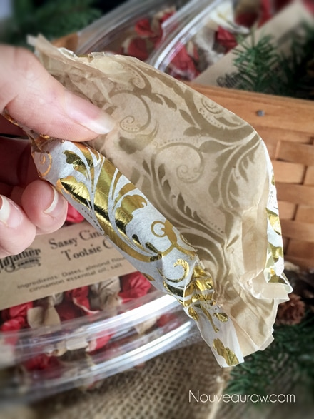

Sassy Cinnamon Tootsie Chews

~ raw, vegan, gluten-free ~
When I started out on this endeavor, I used ground cinnamon powder. As I was building the flavor base, I kept having to add more and more and more cinnamon to get that nice pop that I was looking for. I got up to 1/4 of a cup. Jimmy Cricket’s! But, I continued my process hoping that they would turn out.
When the timer dinged and they were done, I allowed them to cool before taste testing. The cinnamon flavor danced in my mouth, just like I wanted it too… but then my mouth became the Sahara Desert… dry as a bone. “Waaaaater… I need water… someone get me some waaaaaater.” lol Too much ground cinnamon can and did do that to this recipe.
I was bummed but refused to give in. I always enjoyed cinnamon hard candies growing up so I really wanted to recreate at least that cinnamon flavor in some form or fashion.
So, I turned to my essential oil collection. Why I didn’t go there first is beyond me but I am still learning. hehe With 12 tiny drops I was able to create that wonderful warming cinnamon flavor and not dry out my mouth.
Cinnamon Essential Oil
Cinnamon oil (Cinnamomum zeylanicum) is very effective for indigestion, nausea, vomiting, upset stomach, diarrhea and flatulence. Due to its carminative properties, it is very helpful in eliminating excess gas from the stomach and intestines. Could all this be in candy??
It is related to Cassia, which means it’s a “hot” oil, so if you want to keep your nose hairs intact, don’t go taking deep inhales of this from the bottle. I am still recovering. lol I ordered my oil from a friend who sells Living Young, which I really love. Keep in mind that not all oils are created equal, so test brands carefully.
For the almond flour, I used fine almond flour, not ground almonds. If you just use ground almonds the candies can turn out grainy. One way to achieve fine almond flour is too dry the almond pulp after making almond milk. Grind this to a fine powder once dried. If you are not able to do this and 100% raw isn’t your top priority, you can purchase almond flour.
For packaging ideas, I used a hinged clamshell that you can find (here) or at any local restaurant store. Twelve candies fit perfectly in them. To wrap the candies, I used brown wax paper (not parchment, too stiff) and tissue paper. I have wrapped over 1,000 pieces of candy this holiday and I have learned what works the best… trust me, I am a certified wrapper now.
As far as tissue paper goes, you can use any color or pattern but stay away from full metallic foil papers. They don’t twist close well at all. Some tissue papers have metallic in them (as you see below), these work just fine. When using tissue paper, you will want to use a piece of wax paper on the inside of it so the candy doesn’t stick. The tissue paper is just decorative. Well, I hope you enjoy this recipe. Many blessings and please leave a comment below. I love hearing from you… yes, you. :) amie sue
Yields 48 (2” candies)
- 2 cups date paste
- 1/2 cup fine almond flour
- 12 drops Cinnamon essential oil
- 1/2 tsp Himalayan pink salt
Preparation:
Create the candy batter:
- Remove the pits from the dates as you put them in the measuring cup.
- Be sure to inspect each date as you tear it in half to remove the pit. Mold and insect eggs can infect dried dates. I don’t mean to gross you out, you just need to be made aware of this.
- Place the date paste, almond flour, cinnamon oil, and salt in the food processor fitted with the “S” blade. Process until it turns into a creamy paste.
Fill the piping bag:
- Click (here) to view some photos of how I piped these.
- It is best to use either a canvas or a silicone piping bag. I used the piping tip Ateco #808.
- While holding the bag with one hand, fold down the top with the other hand to form a cuff over your hand.
- Fill the bag 1/2 full. If you overfill the bag, the excess batter may squeeze out the wrong end not to mention that you will have less control of the bag when piping.
- Close the bag by unfolding the cuff and twisting the bag closed. This forces the batter down into the bag.
- “Burping” the bag: Make sure you release any air trapped in the bag by squeezing some of the batter out of the tip into the bowl. This is called “burping” the bag.
- If you don’t remove the air bubbles they will come out while you are piping your straight line and cause blurps and breaks. Best to create a seamless line.
Piping:
- Hold the piping bag tip about 1/4″ above the non-stick sheet, at about a 22-degree angle (half of a 45 ), and slowly pipe the batter from one edge of the dehydrator tray to the other.
- Keep constant pressure on the piping bag as you squeeze out the paste. This will ensure an even thickness of the line.
- After each completed line, stop and retwist the piping bag, working all paste towards the tip. This will eliminate air bubbles in the bag and give you a solid grip.
- Remember: It doesn’t have to be perfect. Just have fun and if you make a mistake, scoop it up, place back in the bag and do it again.
Dehydrate & store:
- Place the tray in the dehydrator and dry at 145 degrees (F) for 1 hour, then reduce to 115 degrees (F) for 16-24 hours.
- Once cooled, cut into 2” lengths and wrap in squares of wax paper.
- I keep mine stored in the fridge for freshness but they can be left out at room temp.
- These candy chews won’t be hard or crunchy.
Culinary Explanations:
- Why do I start the dehydrator at 145 degrees (F)? Click (here) to learn the reason behind this.
- When working with fresh ingredients it is important to taste test as you build a recipe. Learn why (here).

Wait for it…. wait for it….
Scratch n’ Sniff picture.
© AmieSue.com